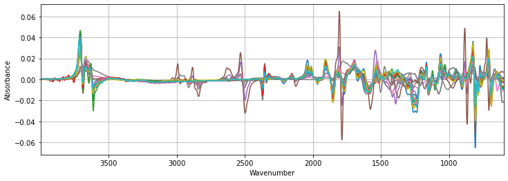
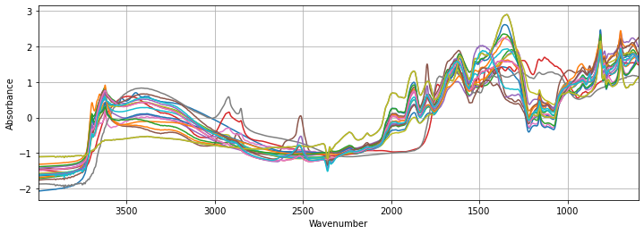
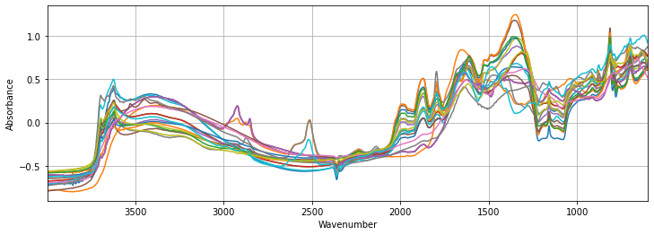

src_dir = 'test'
fnames = ['spectra-features-smp.npy', 'spectra-wavenumbers-smp.npy',
'depth-order-smp.npy', 'target-smp.npy',
'tax-order-lu-smp.pkl', 'spectra-id-smp.npy']
X, X_names, depth_order, y, tax_lookup, X_id = load_kssl(src_dir, fnames=fnames)Transform
Utility function to transform features and target - order: 3
::: {.cell 0=‘h’ 1=‘i’ 2=‘d’ 3=‘e’}
from nbdev.showdoc import *:::
::: {.cell 0=‘h’ 1=‘i’ 2=‘d’ 3=‘e’}
%load_ext autoreload
%autoreload 2:::
::: {.cell 0=‘e’ 1=‘x’ 2=‘p’ 3=‘o’ 4=‘r’ 5=‘t’}
#nbdev_comment from __future__ import annotations
import numpy as np
from sklearn.base import BaseEstimator, TransformerMixin
from scipy.signal import savgol_filter
from fastcore.test import *
from mirzai.data.loading import load_kssl
from mirzai.vis.core import plot_spectra:::
Target variable
::: {.cell 0=‘e’ 1=‘x’ 2=‘p’ 3=‘o’ 4=‘r’ 5=‘t’}
def log_transform_y(data:tuple # (X, y, X_id, depth_order)
):
"""
Log-10 transform of the target value
Takes and returns all (X, y, X_id, depth_order) tuple to be able to pipe the function
"""
X, y, X_id, depth_order = data
y = np.log10(y)
return X, y, X_id, depth_order:::
Features (spectra)
::: {.cell 0=‘e’ 1=‘x’ 2=‘p’ 3=‘o’ 4=‘r’ 5=‘t’}
CO2_REGION = [2389, 2269]:::
::: {.cell 0=‘e’ 1=‘x’ 2=‘p’ 3=‘o’ 4=‘r’ 5=‘t’}
class TakeDerivative(BaseEstimator, TransformerMixin):
"""Creates scikit-learn derivation custom transformer
Args:
window_length: int, optional
Specify savgol filter smoothing window length
polyorder: int, optional
Specify order of the polynom used to interpolate derived signal
deriv: int, optional
Specify derivation degree
Returns:
scikit-learn custom transformer
"""
def __init__(self, window_length=11, polyorder=1, deriv=1):
self.window_length = window_length
self.polyorder = polyorder
self.deriv = deriv
def fit(self, X, y=None):
return self
def transform(self, X, y=None):
return savgol_filter(X, self.window_length, self.polyorder, self.deriv):::
tfm = TakeDerivative()
plot_spectra(tfm.fit_transform(X), X_names, figsize=(12,4))
::: {.cell 0=‘e’ 1=‘x’ 2=‘p’ 3=‘o’ 4=‘r’ 5=‘t’}
class SNV(BaseEstimator, TransformerMixin):
"""Creates scikit-learn SNV custom transformer
Args:
None
Returns:
scikit-learn custom transformer
"""
def __init__(self):
pass
def fit(self, X, y=None):
return self
def transform(self, X, y=None):
mean, std = np.mean(X, axis=1).reshape(-1, 1), np.std(X, axis=1).reshape(-1, 1)
return (X - mean)/std:::
tfm = SNV()
plot_spectra(tfm.fit_transform(X), X_names, figsize=(12,4))
class Center(BaseEstimator, TransformerMixin):
"""Creates scikit-learn Centering custom transformer
Args:
None
Returns:
scikit-learn custom transformer
"""
def __init__(self):
pass
def fit(self, X, y=None):
return self
def transform(self, X, y=None):
return X - np.mean(X, axis=1).reshape(-1, 1)tfm = Center()
plot_spectra(tfm.fit_transform(X), X_names, figsize=(12,4))
::: {.cell 0=‘e’ 1=‘x’ 2=‘p’ 3=‘o’ 4=‘r’ 5=‘t’}
class DropSpectralRegions(BaseEstimator, TransformerMixin):
"""Creates scikit-learn custom transformer dropping specific spectral region(s)
Args:
wavenumbers: list
List of wavenumbers where absorbance measured
regions: list
List of region(s) to drop
Returns:
scikit-learn custom transformer
"""
def __init__(self, wavenumbers, regions=[2389, 2269]):
self.wavenumbers = wavenumbers
self.regions = regions
def _sanitize(self, regions):
nb_regions = len(np.array(regions).shape)
return np.array([regions]) if nb_regions == 1 else np.array(regions)
def _exists(self, wavenumbers, regions):
for wn in regions.flatten():
assert wn in wavenumbers, 'Wavenumber "{}" does not exist'.format(wn)
def fit(self, X, y=None):
return self
def transform(self, X, y=None):
regions = self._sanitize(self.regions)
X_transformed = np.copy(X)
self._exists(self.wavenumbers, regions)
for region in regions:
high, low = region
mask = (self.wavenumbers <= high) & (self.wavenumbers >= low)
X_transformed[:, mask] = 0
return X_transformed:::
tfm = DropSpectralRegions(X_names, regions=CO2_REGION)
plot_spectra(tfm.fit_transform(X), X_names, figsize=(12,4))